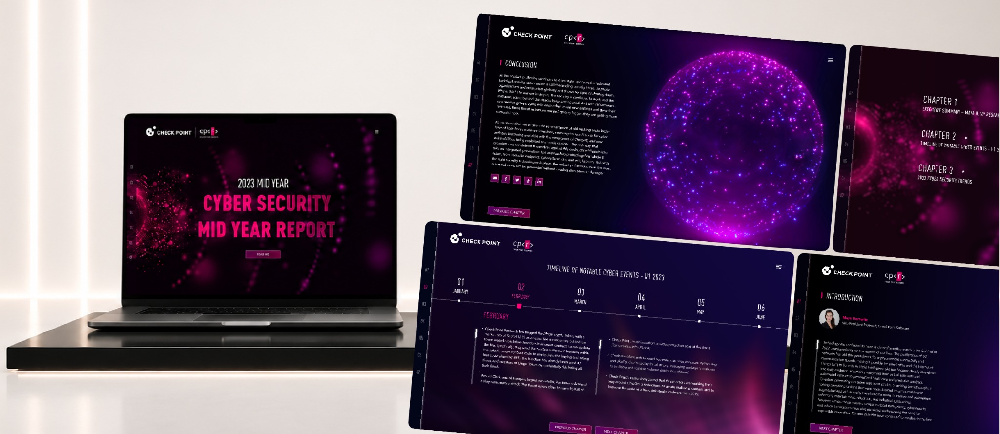

CASE STUDY · 2023
Check Point
Interactive Cyber Security Report
Designed to make complex cybersecurity research accessible through interactive storytelling, data visualization, and modular navigation.

INSIDE THE REPORT
Complex data,
made clear.


One system. Multiple chapters.
A single visual language.

GET IN TOUCH